Well hello there, and welcome to my pink little corner of this wild wild web. I made this page because I just keep making stuff and needed somewhere to put all of it! I'm not really coding oriented... I barely know how to speak my primary language. However, it's been a blast creating my own space and reminded me that the internet used to be fun and whatever color we wanted it to be. I hope you will accept all flaws and typos in this page and enjoy some of my work! But first, a little bit about me...
I have been a guitar maker for almost a decade, working at boutique electric bass companies like Sadowsky and LEH Guitars. The trade has been the best playground and classroom for my obssesion in the mathematical and chemical arts. Regularly encountering challanges such as the chemistry of auto-finishes or the calculus of 3D design and small signal circuits, I have picked up so many random skills and seemingly useless knowldge over the years that it has been hard to put it all in one place.
These days I don't really consider myself a luthier - I still love making guitars, and I plan to spend the rest of my life in the world of musical mechanics. A more acurate term for what I do might be sculpter of cellulose. I have an interest in the lives of plants and their physical reincarnations. I love making practical and essential objects that last a while, want to be used and not just sit in a display case. I believe land stewardship is an integral part of manufacturing and that sustainability is a necessary part of any craft. I think Descartes was wrong and the dogs are right. I hope to get my butt into the garden, bring some friends with me, and that we'll all make something beautiful together.
"...When I meet a
stranger—
Out of courtesy
I turn on a soft
Pink light
Which is found
modest
Even charming.
it is protection
Against wear
and tears…
And when
I am rid of
The Always-to-be-
Stranger
I turn on my light
And become
myself."
- Florine Stettheimer
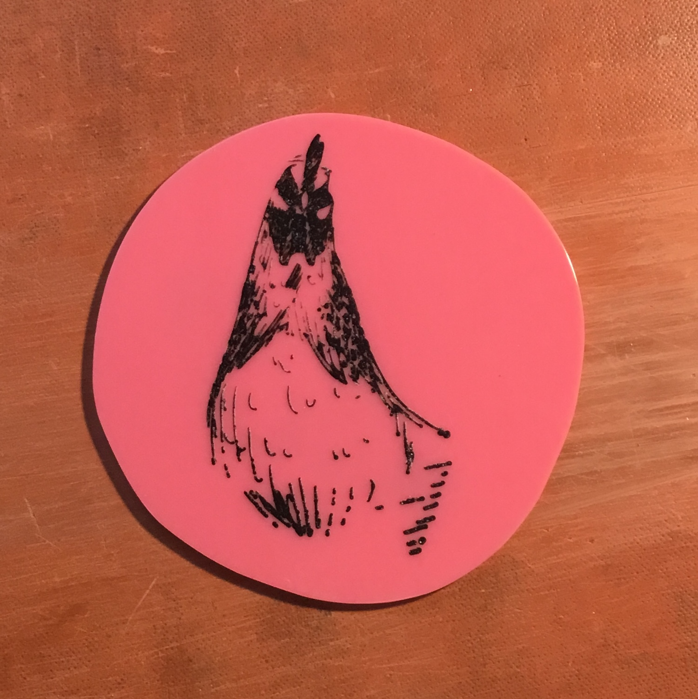
cluck coin - token of friendship.
routed engraving on acrylic w/ cyano fill
drawing by bre stanton
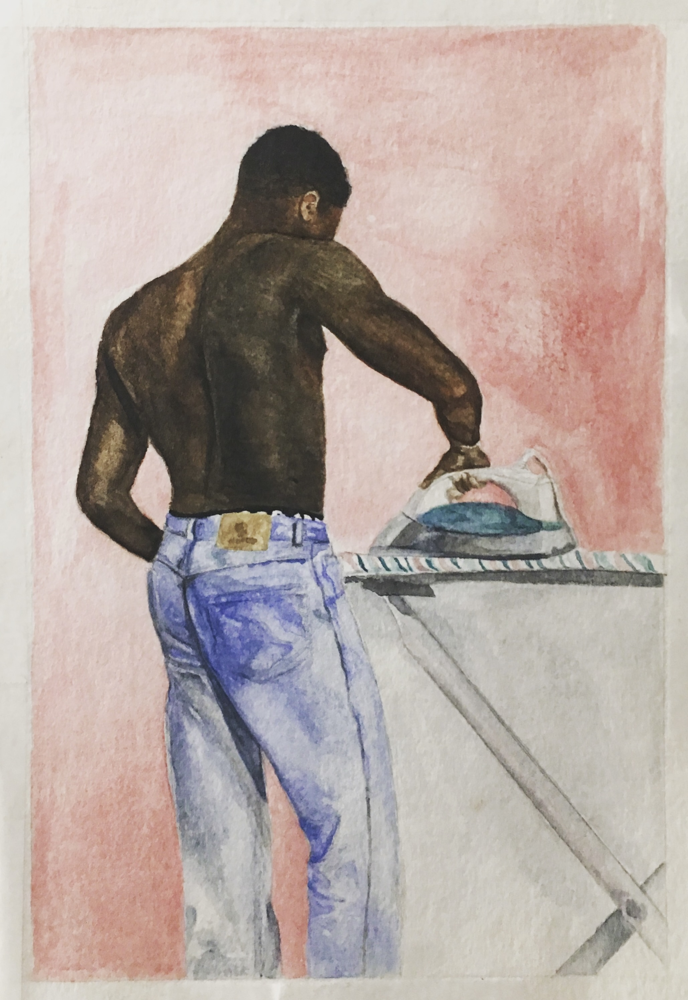
tâches des anciennes
watercolor and graphite
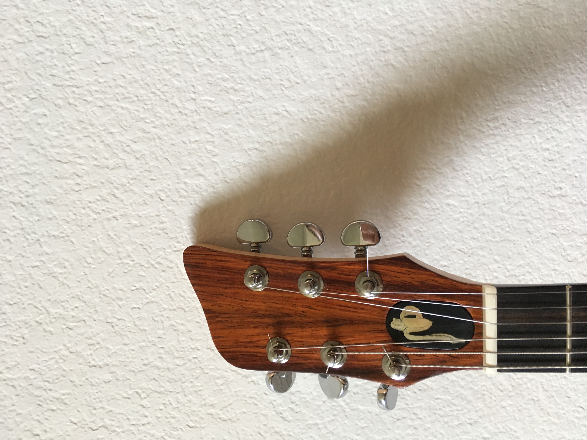
cocobolo hs, maple neck, ebody fb
ebony & mop truss rod cover
grover tuners & bone nut

magnetic truss rod cover
mother of pearl in ebony

cedar top / e. indian back & sides
maple neck, ebody fb, cocobolo b&s
ebony truss rod cover

cocobolo top / mahogany body
maple neck / ebony fingerboard
cocobolo headstocks / ebony truss rod cover
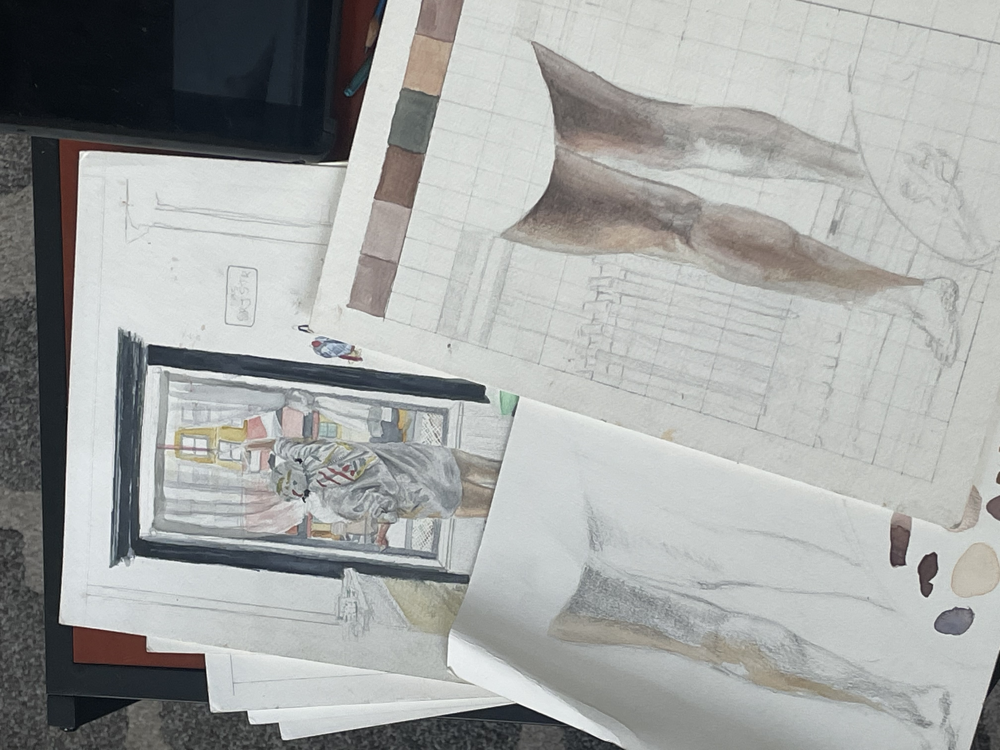
studies for tâches des l'anciennes series
watercolor and graphite

cotton double weave sampler
8-shaft loom
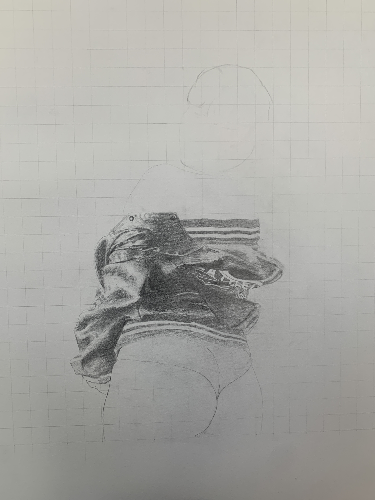
study for a portrait of a friend
graphite
wip

ebondy cap / mahogany neck
mop banana inlay

tâches des l'anciennes
watercolor and graphite
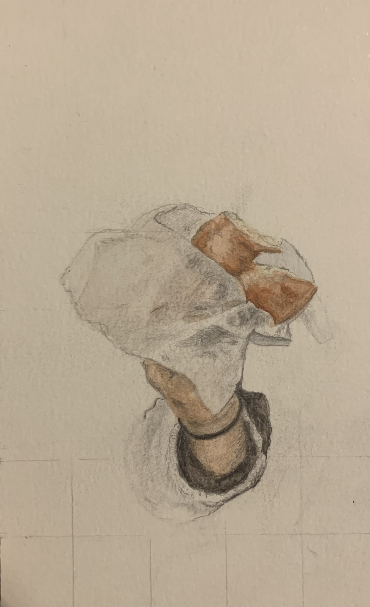
a friend offers a donut
watercolor and graphite
wip
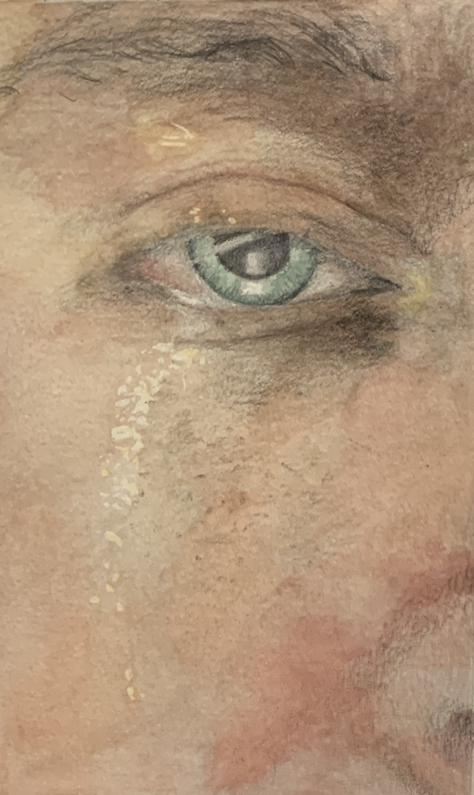
self portrait during a hot meal
watercolor and graphite
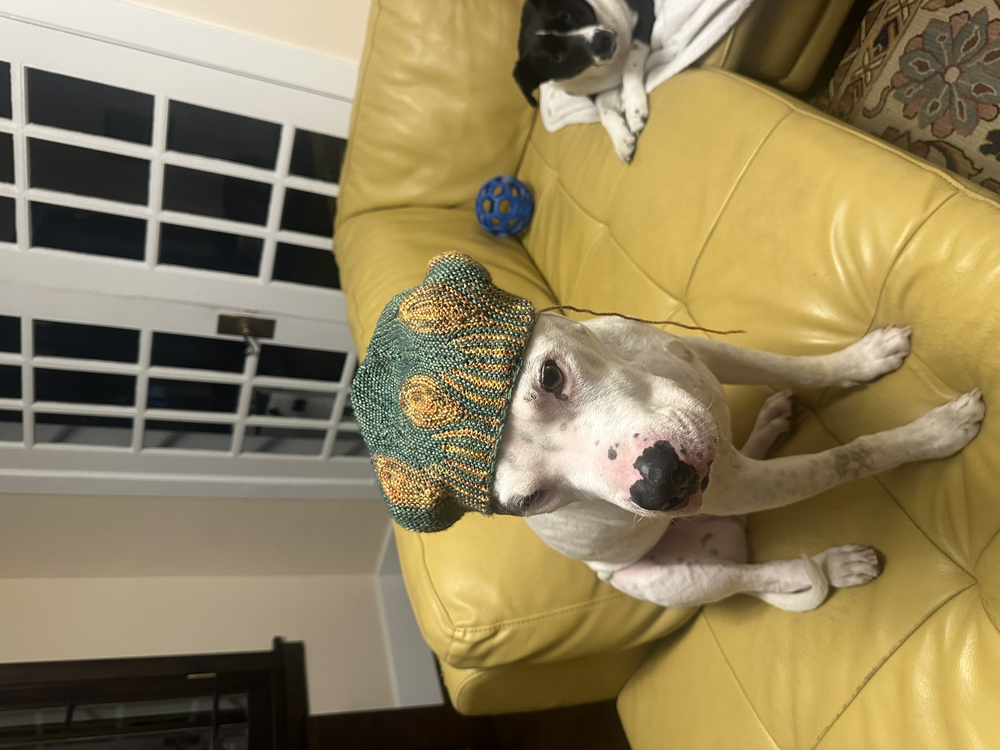
knitted hat on model
pattern by wooly wormhead
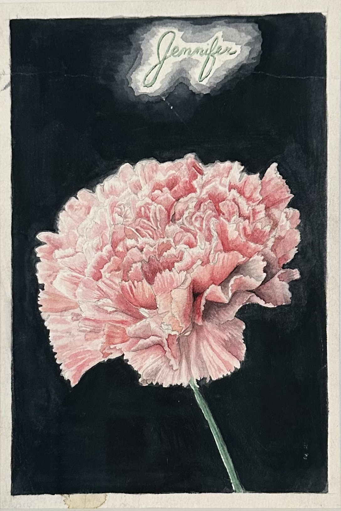
mothers day card
watercolor and graphite

removing the seed
watercolor and graphite

thank you cards
watercolor and graphite

self portrait with winston
watercolor and graphite

mothers day card
watercolor and graphite

baritone body 3D render
surf style with matery bridge
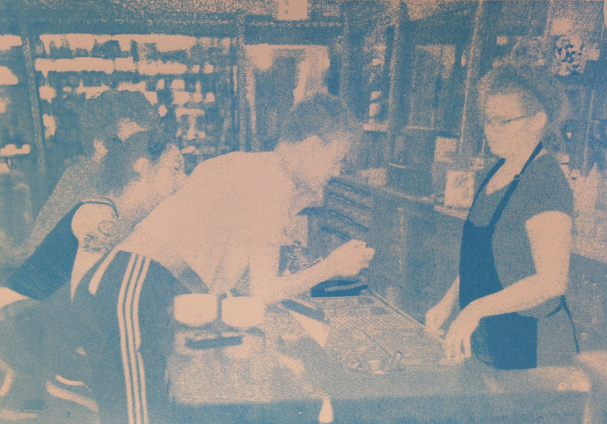
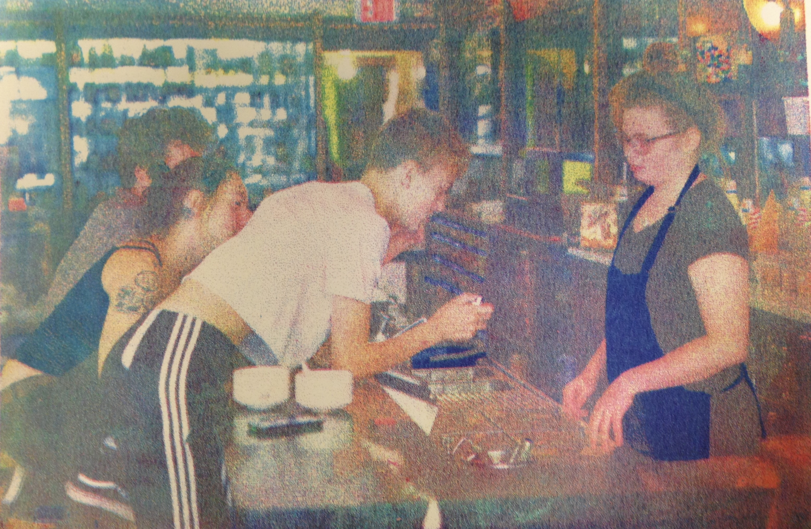
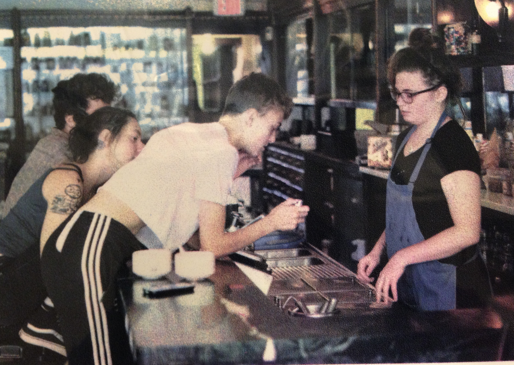
the old klavon's
CMYK silkscreen
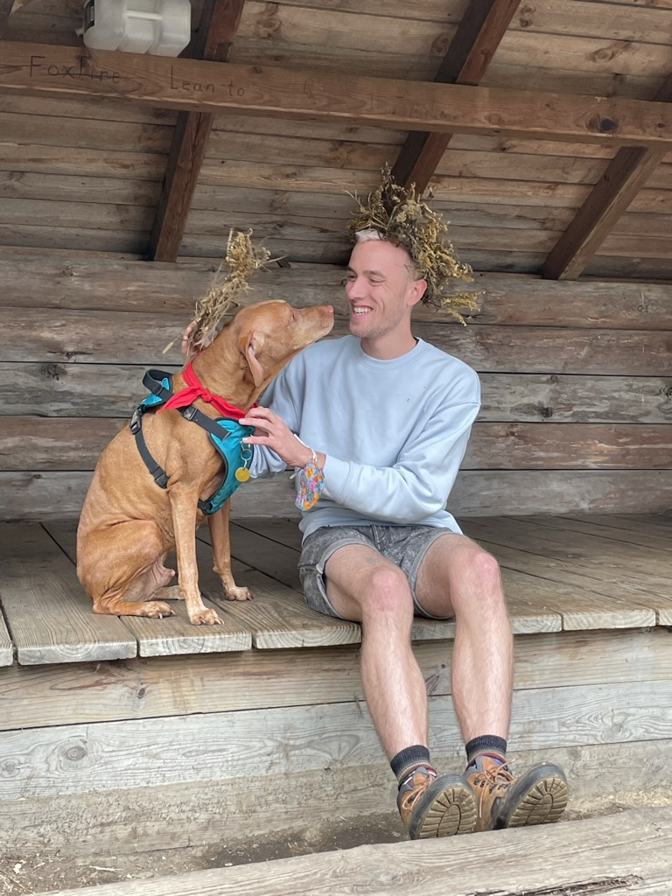
Yo, shout out to everybody that worked on the album you feel me? Shouts out to the homie Sakony whos art and sobriety inspires change and improvement. Shout out to Maya who chainsaws trees while they're on friggen fire. Shout out to the teachers and the leaders that ever taught my big head - thanks for your patience. Shout out to Kate Daher who taught real history. Shout out to Palestine. Shouts out to Roxanne Pearsall who should have failed me but taught me how to mix my own developer from the chem lab. Shout out to